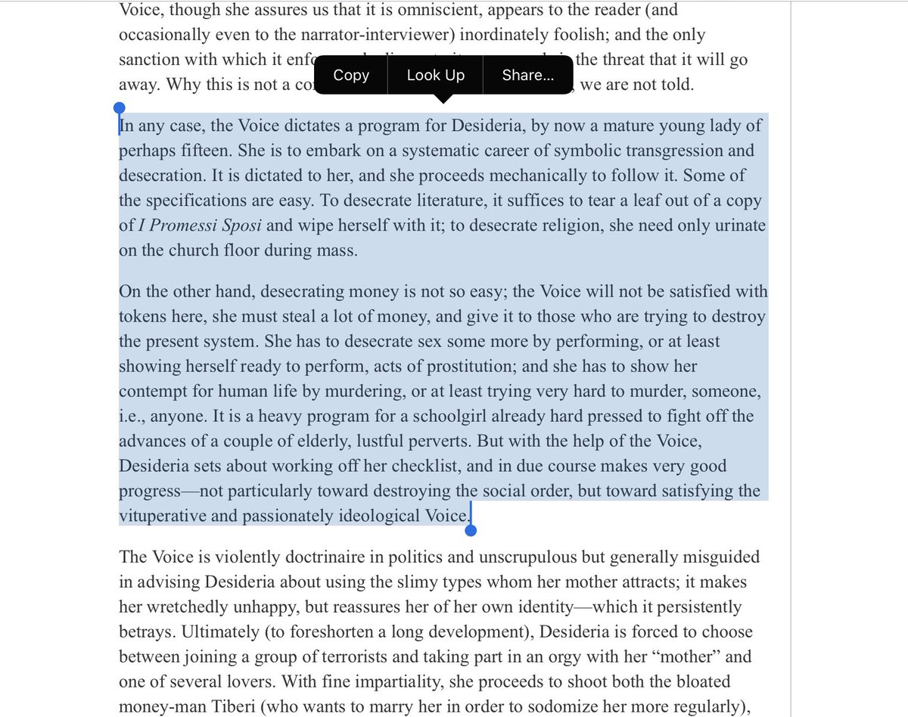

43. The Financial Lensing Effect
May 3, 2020
In which I coin the 'financial lensing effect' — large concentrations of capital bending truth and warping epistemology like gravitational lensing — and argue that the economy is a powerful distributed computer tragically programmed by its dullest, richest users, with reference to Alberto Moravia.
Very large quantities of concentrated capital can bend truth rays and warp epistimology and ontology. There is a financial lending effect by which you can detect the presence of large cold masses of money that otherwise can’t be seen
Very tired of how financial lensing effects muck up everything I find interesting and worthwhile about life, the universe, and everything. Brings out worst in people. If I were religious I’d call money the embodiment of the devil. The effect is very nonlinear in amount of money
Lensing not lending
I’m not particularly bothered by high inequality per se. But the warping it causes in the top levels of society is really unpleasant to see close up. This last year or so has been particularly rich in such odious spectacles, and it has sharply accelerated with the pandemic.
It’s hilarious how people worry about cute little cognitive biases at the individual level when the entire human condition is in orbit around a money black hole, with the wealthiest orbiting closest, with most warping.
To a first approximation, “less wrong” is just “not too closely in orbit around large piles of money” (but not too far either... but the consequences of cognitive distortions of extreme poverty are mostly limited to you, you can’t screw up the world at large beyond a point)
Looking back, I’ve expended huge efforts in my life trying to keep my thinking clear of the distortionary effects of money — having it, not having it, being near piles of it, being far from piles of it. Trying to be something of a money neutrino. Pass right through unaffected.
In my idea of a better world, money would simply be yet another global coordination/communication/computation tool, like traffic signs or air traffic control radar systems. A few would nerd out over it, most would be slightly bored by it but have enough and deal with it.
You wouldn’t have the entire human condition enslaved by obsession with it, with the top leaders of any consequential hierarchy being absolutely obsessed with maximal accumulation of it. Money is simply not that interesting.
To make a comparison, language is like money in many ways, a global tool of coordination, computation, and communication. But we’re kinda sane about it. We don’t revere large piles of words. Librarians of the largest libraries aren’t treated like Bill Gates is with money.
Here’s a small glimpse of why I dislike what large concentrations of money does to humanity. Say you gave a 3rd gen failson sitting on 100 million with no ideas. So, he sounds on yachts, booze, prostitutes, whatever. You could argue that the “dumb money” gets smart 1 degree out
1 degree out, the $ goes to yacht designers, bartenders, etc. So damage seems low. One person living a life I would not want for myself. But who am I to judge. Except it’s not just one person. Hundreds of people are living lives shaped by the logic of 1st order failson spending.
Would they do something else more fulfilling with their lives if their best option hadn’t been pandering to unimaginative failson’s miserable idea of a good life?
The economy is often compared to a large distributed computer (correct). It is often assumed to be an efficient computer under some narrow conditions (also kinda correct). What is not often talked about is — who programs it and for what. And the answer to that is not pretty.
It is programmed by the stewards of the largest, slowest piles of money. Each dollar you hold is like a right to one cpu cycle. Even governments can’t alter this landscape wholesale. Only reshape it in certain known ways.
It’s like if your family had one tv and the tantrummy 5 year old insists on controlling the remote and will only allow the tv to play his favorite kid cartoons on endless repeat. It’s a powerful device but can do only a fraction of what it is capable of.
That’s what even an ideal efficient market controlled by large capital piles is like.
I don’t mind spending a reasonable fraction of my time thinking about my personal finances. Cost of doing the business of living life. But i grudge every minute I have to devote to modeling and predicting consequence of existence of large piles of tens/hundreds of billions.
If I’m consulting for a company that makes widgets its because I am interested in widgets. Not in the psychology of a dozen bores who own the PE company that bought the widget company and don’t give a shit about widgets.
I hate that any sufficiently important and interesting project turns into a “money psychology of boring people” project if you give it long enough. Kinda like how any social media product turns into a messaging app if you give it enough time. So everybody has to think about that.
One of my weird influences is Alberto Moravia’s Time of Desecration, which I randomly read as a teenager because it happened to be around. Not the sort of book I’d pick myself. But the theme of desecrating money stayed with me. Moravia's Victims | Robert M. Adams | The New York Review of Books
